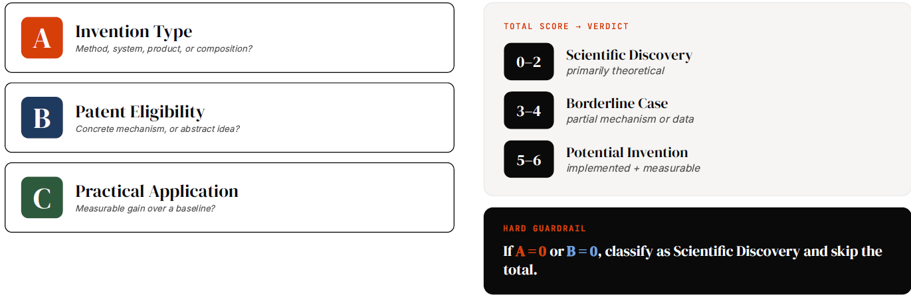
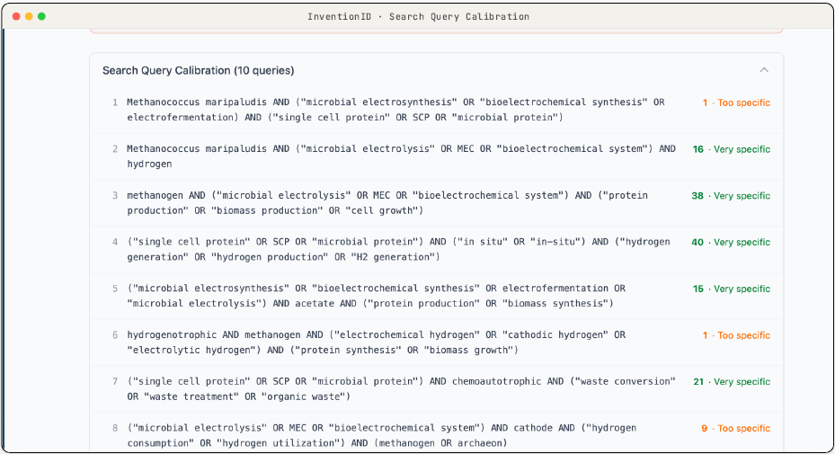
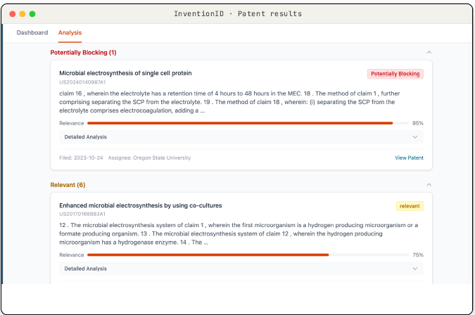
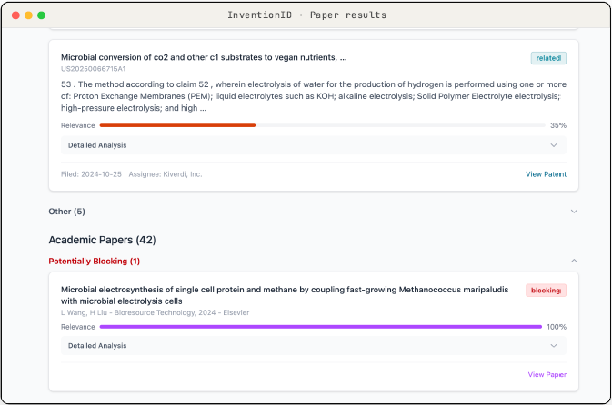
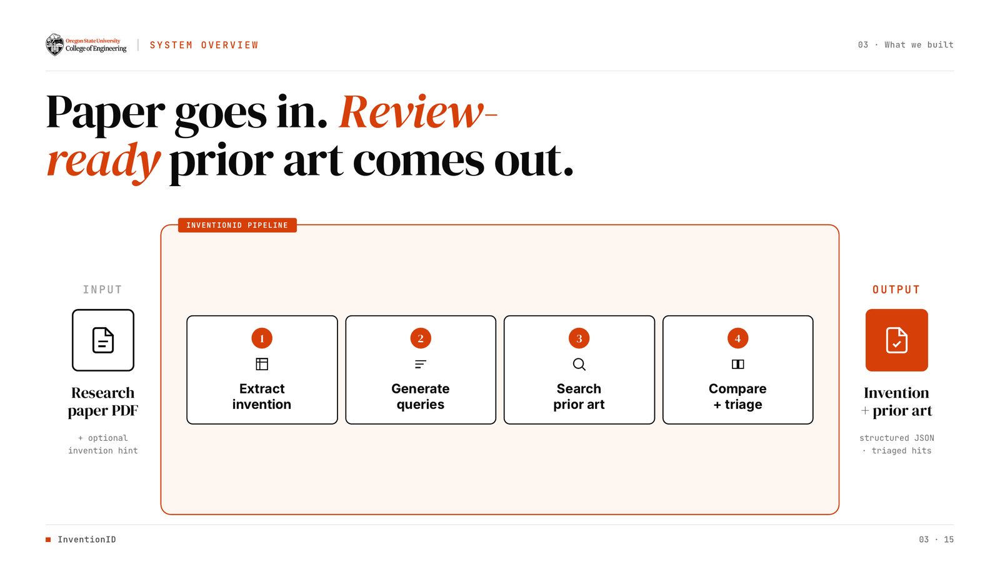
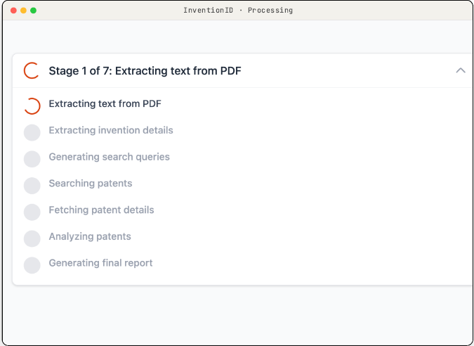
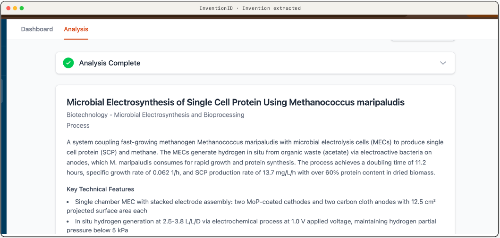

M.S. Capstone · Oregon State University · Team of 3
InventionID — Automated Invention Extraction & Prior-Art Analysis
An agentic pipeline that reads technical documents and surfaces potentially patentable ideas — mimicking how a patent analyst works.
Overview
Reviewing technical documents for patentable ideas is slow, expert work: read the document, pull out the core contribution, phrase it as a patent claim, then search prior art to judge novelty. InventionID automates that loop end to end, turning a document into a set of candidate inventions with supporting evidence and a first-pass novelty check. Built as a three-person M.S. capstone at Oregon State University.
My role
I owned the prior-art search and patentability screening (§101 subject-matter eligibility) — the system's novelty-analysis core — including the Google Patents and Google Scholar integration via the SerpAPI and Semantic Scholar APIs. The overall pipeline architecture and long-context inference (AWS Bedrock, prompt caching) were built with the team.




How it works

The system runs a multi-stage pipeline: PDF parsing, section summarization, embedding, patent-query generation, and prior-art retrieval. Long-context LLM inference runs on AWS Bedrock, with prompt caching so the same document can be queried repeatedly without paying full token cost each time.
For evidence and citations it uses retrieval-augmented generation (RAG) over a FAISS vector index, pulling the specific snippets that support each claim. Prior-art discovery reaches outside the paper through external APIs — SerpAPI and Semantic Scholar — to query Google Patents and Google Scholar for overlapping work. A small set of decision rules (document size, query frequency, update rate) picks between prompt-caching and RAG on the fly so the pipeline stays cost- and latency-aware.
Results
End to end, InventionID turns what used to be hours of manual prior-art searching into a few minutes: a reviewer drops in a PDF and gets back a structured invention summary, a first-pass patentability read, and prior-art hits sorted by how much they matter. Every stage is visible and adjustable, so the tool supports the reviewer's judgment rather than replacing it.

